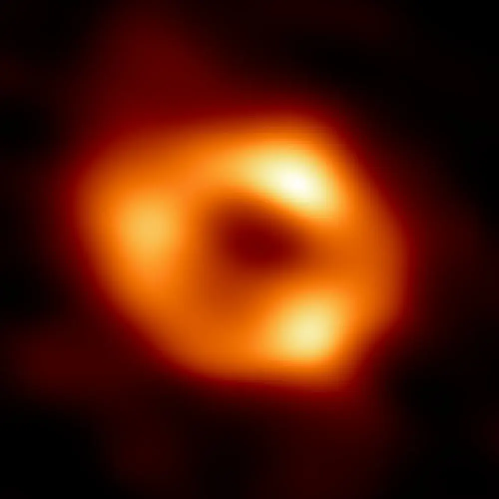

Blackब्लैकAgujerosBuracosTrousالثقوب holes.होल।negros.negros.noirs.السوداء.
The darkest objects in the universe, explained from the start. No maths needed, and every number comes from real measurements.ब्रह्मांड की सबसे अँधेरी चीज़ें, शुरू से समझाई हुई। गणित की ज़रूरत नहीं, और हर आँकड़ा असली माप से आया है।
Start hereयहाँ से शुरू करेंEmpieza aquíComece aquiCommencer iciابدأ من هنا →Famous black holesमशहूर ब्लैक होलAgujeros negros famososBuracos negros famososTrous noirs célèbresثقوب سوداء مشهورة🧪 Black hole labब्लैक होल labLaboratorio de agujeros negrosLaboratório de buracos negrosLabo des trous noirsمختبر الثقوب السوداء🎓 Black holes 101Black holes 101Agujeros negros 101Buracos negros 101Trous noirs 101الثقوب السوداء 101
4.3 million Suns43 लाख सूरज के बराबर4,3 millones de Soles4,3 milhões de Sóis4,3 millions de Soleils4.3 مليون شمسOur Galaxy's black holeहमारी आकाशगंगा का ब्लैक होलEl agujero negro de nuestra GalaxiaO buraco negro da nossa GaláxiaLe trou noir de notre Galaxieالثقب الأسود في مجرتنا
~26,000 light-years~26,000 प्रकाश-वर्ष~26.000 años luz~26.000 anos-luz~26 000 années-lumière~26,000 سنة ضوئيةDistance to itउसकी दूरीDistancia hasta élDistância até eleDistance jusqu’à luiالمسافة إليه
April 2019 (M87*)अप्रैल 2019 (M87*)Abril de 2019 (M87*)Abril de 2019 (M87*)Avril 2019 (M87*)أبريل 2019 (M87*)First picture of oneपहली तस्वीरPrimera imagen de unoPrimeira imagem de umPremière image d’un trou noirأول صورة لثقب أسود
~1,600 light-years~1,600 प्रकाश-वर्ष~1.600 años luz~1.600 anos-luz~1 600 années-lumière~1,600 سنة ضوئيةNearest known so farअब तक का सबसे पासEl más cercano conocido hasta ahoraO mais próximo conhecido até agoraLe plus proche connu à ce jourأقرب ثقب معروف حتى الآن
Real picturesअसली तस्वीरें
The Event Horizon Telescope joined radio dishes around the world into one Earth-sized telescope to take these.Event Horizon Telescope ने दुनिया भर के radio dishes को जोड़कर पृथ्वी जितना बड़ा एक telescope बनाया और ये तस्वीरें लीं।

📷 EHT Collaboration · CC BY 4.0

📷 EHT Collaboration · CC BY 4.0
Parts of a black holeब्लैक होल के हिस्से
Seven short pagesसात छोटे पन्नेSiete páginas cortasSete páginas curtasSept pages courtesسبع صفحات قصيرة
⚫What is a black hole?ब्लैक होल क्या है?¿Qué es un agujero negro?O que é um buraco negro?Qu’est-ce qu’un trou noir ?ما هو الثقب الأسود؟The idea in plain words: gravity, escape speed and the point of no return.सीधे शब्दों में: gravity, escape speed और वापसी का आख़िरी बिंदु।→💥How black holes formब्लैक होल कैसे बनते हैंCómo se forman los agujeros negrosComo se formam os buracos negrosComment naissent les trous noirsكيف تتكوّن الثقوب السوداءDying stars, giants in galaxy centres, and the middle sizes in between.मरते तारे, galaxies के केंद्र के दानव, और बीच के आकार।→🎯Event horizon and singularityEvent horizon और singularityHorizonte de sucesos y singularidadHorizonte de eventos e singularidadeHorizon des événements et singularitéأفق الحدث والمفردةHow big a black hole is, what its edge is, and what sits at the centre.ब्लैक होल कितना बड़ा है, उसका किनारा क्या है और केंद्र में क्या है।→🧑🚀Falling into a black holeब्लैक होल में गिरनाCaer en un agujero negroCair num buraco negroTomber dans un trou noirالسقوط في ثقب أسودStretching, slowing time, and what an astronaut would really notice.खिंचाव, धीमा समय, और एक यात्री को सच में क्या महसूस होगा।→🌟Famous black holesमशहूर ब्लैक होलAgujeros negros famososBuracos negros famososTrous noirs célèbresثقوب سوداء مشهورةSagittarius A*, M87*, Cygnus X-1, Gaia BH1, GW150914 and TON 618.Sagittarius A*, M87*, Cygnus X-1, Gaia BH1, GW150914 और TON 618।→📡How we see the invisibleअदृश्य को हम कैसे देखते हैंCómo vemos lo invisibleComo vemos o invisívelComment voir l’invisibleكيف نرى ما لا يُرىHot gas, orbiting stars, ripples in space and the first pictures.गर्म गैस, चक्कर लगाते तारे, अंतरिक्ष की लहरें और पहली तस्वीरें।→❓Myths and big questionsभ्रम और बड़े सवालMitos y grandes preguntasMitos e grandes perguntasMythes et grandes questionsخرافات وأسئلة كبرىWhat is not true about black holes, and what nobody knows yet.ब्लैक होल के बारे में क्या सच नहीं है, और क्या अभी कोई नहीं जानता।→